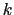
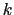

For each point of the surface distribution (of radius
= atom radius
+ probe radius) of atom  , check each of the atoms
to which it is
covalently bound. If the point is too close to
, don't display it.
Also, if the point is too close to any neighbor 
of
(
) then
don't draw it. This is fast since there aren't that many neighbors to
check, but it doesn't omit parts of the surface in contact with atoms
which aren't one or two bonds away. This can be considered a good
thing since you might get a better idea of the contact surface.
, check each of the atoms
to which it is
covalently bound. If the point is too close to
, don't display it.
Also, if the point is too close to any neighbor 
of
(
) then
don't draw it. This is fast since there aren't that many neighbors to
check, but it doesn't omit parts of the surface in contact with atoms
which aren't one or two bonds away. This can be considered a good
thing since you might get a better idea of the contact surface.
There are three parameters for this option. One is the Probe Radius, which was mentioned in the description. If the probe radius is too large, the problem of over-lapping surfaces between non-connected atoms becomes more apparent. The second is Detail Level, which should probably be renamed "Density" as it determines the surface density of the distributions. The higher the detail, the higher the density. The final option is the Representation Method. By default the surface is drawn as a collection of points, but a point is a pixel in size regardless of the scale of the molecule, so when scaled small the surface density appears high, and when scaled large, the density appears low. Method 2 draws little plus signs instead of points, which does scale better so the density appears more contant. Method 3 draw lines between the surface points that are on the same atom, but makes no attempt to connect the two spheres.
Thanks to Jan Hermans for implementation pointers and thanks again to Jon Leech for the code to compute the uniform point distributions. That code was included as part of the 1.x distribution.